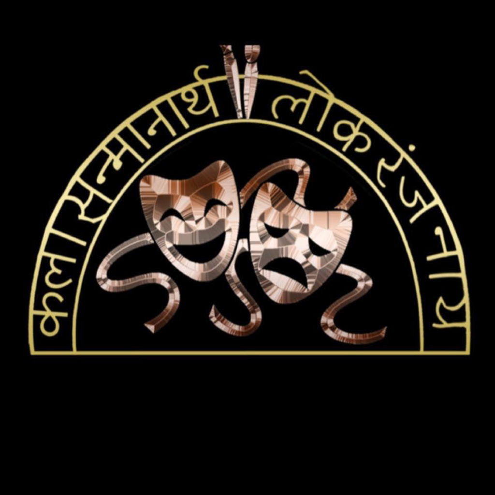

<ion-header>
  <ion-toolbar>
    <ion-buttons slot="start">
      <ion-menu-button></ion-menu-button>
    </ion-buttons>
    <ion-title color="primary">
      Home
    </ion-title>
  </ion-toolbar>
</ion-header>
<ion-content class="ion-padding">
  <div class="one-image">
    
  </div>
  <ion-grid>
    <ion-row class="ion-align-items-center ion-justify-content-center">
      <ion-col class="align-self-center" size-md="6" size-lg="5" size-xs="12">
        <div class="ion-text-center">
          <h4> We are a group of rasik natak premi
            (performing art lovers) whose aim is to help local talent fulfill their dreams of performing on stage and bring creative productions to stages in and around Cincinnati, Ohio.
          </h4>
        </div>
      </ion-col>
    </ion-row>
  </ion-grid>

  <ion-fab vertical="bottom" horizontal="end" slot="fixed">
    <ion-fab-button>Share</ion-fab-button>
    <ion-fab-list side="start">
      <ion-fab-button color="primary" (click)="openWithSystemBrowser('https://facebook.com/kalasanmancincy/')">
        <ion-icon name="logo-facebook"></ion-icon>
      </ion-fab-button>
      <ion-fab-button color="primary" (click)="openWithSystemBrowser('https://instagram.com/kalasanmancincy/')">
        <ion-icon name="logo-instagram"></ion-icon>
      </ion-fab-button>
      <ion-fab-button color="primary" (click)="openWithSystemBrowser('https://twitter.com/#kalasanman/')">
        <ion-icon name="logo-twitter"></ion-icon>
      </ion-fab-button>
      <ion-fab-button color="primary" (click)="alertEmailAddress()">
        <ion-icon name="mail"></ion-icon>
      </ion-fab-button>
    </ion-fab-list>
  </ion-fab>

</ion-content>
<ion-footer>
  <ion-toolbar>
    <ion-title color="secondary" size="small">KalaSanman</ion-title>
  </ion-toolbar>
</ion-footer>
